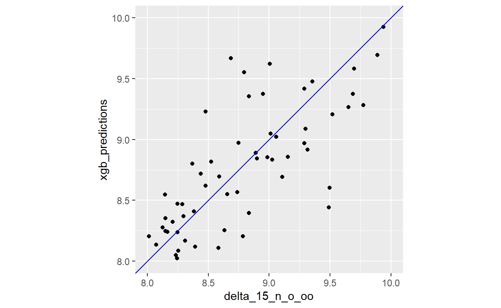
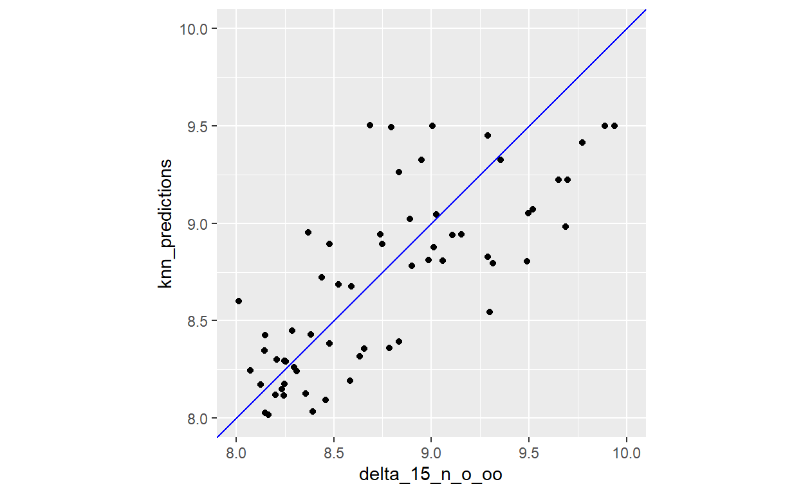

Tidy Tuesday: 21 July 2020
This week’s data can be found here. It is about penguin observations at the Palmer station.
raw_penguins <- readr::read_csv('https://raw.githubusercontent.com/rfordatascience/tidytuesday/master/data/2020/2020-07-28/penguins_raw.csv') %>%
janitor::clean_names()
head(raw_penguins)
# A tibble: 6 x 17
study_name sample_number species region island stage individual_id
<chr> <dbl> <chr> <chr> <chr> <chr> <chr>
1 PAL0708 1 Adelie~ Anvers Torge~ Adul~ N1A1
2 PAL0708 2 Adelie~ Anvers Torge~ Adul~ N1A2
3 PAL0708 3 Adelie~ Anvers Torge~ Adul~ N2A1
4 PAL0708 4 Adelie~ Anvers Torge~ Adul~ N2A2
5 PAL0708 5 Adelie~ Anvers Torge~ Adul~ N3A1
6 PAL0708 6 Adelie~ Anvers Torge~ Adul~ N3A2
# ... with 10 more variables: clutch_completion <chr>,
# date_egg <date>, culmen_length_mm <dbl>, culmen_depth_mm <dbl>,
# flipper_length_mm <dbl>, body_mass_g <dbl>, sex <chr>,
# delta_15_n_o_oo <dbl>, delta_13_c_o_oo <dbl>, comments <chr>There are columns for egg shell isotopes. They are used as proxies for penguin health.
ggplot(raw_penguins, aes(x = delta_15_n_o_oo, y = delta_13_c_o_oo, colour = species))+
geom_point()+
labs(title = 'Eggshell isotopes of Palmer penguins',
x = 'Delta 15 N o/oo',
y = 'Delta 13 C o/oo',
colour = '')+
theme_minimal()+
theme(legend.position = 'bottom')+
guides(color = guide_legend(nrow = 2))
Unfortunately, this dataset has missing values for several these eggshell isotopes. Can we use ML to fill in the delta values with plausible values, based on measurements from the penguin’s body? A good reason to test out the new tidymodels packages!
We’ll demonstrate this idea with the Delta 15 N o/oo value. First, we have to prepare the penguins dataset, and save the rows with missing values separately from the complete data. We’ll use the complete data to train and test the model, before applying the best one to the data with missing values.
model_penguins <- raw_penguins %>%
dplyr::select(body_mass_g, tidyselect::matches('_mm'), tidyselect::matches('oo')) %>%
dplyr::filter(!is.na(body_mass_g))
true_missing <- dplyr::filter(model_penguins, is.na(delta_15_n_o_oo))
non_missing <- dplyr::filter(model_penguins, !is.na(delta_15_n_o_oo)) %>%
dplyr::select(-delta_13_c_o_oo)First, we split data into training and test sets: we will train the model using the training data, and then see how it performs on the testing data (which the model has not seen before).
penguin_split <- rsample::initial_split(non_missing, prop = 0.8)Using the training data, we define pre-processing steps (centering and scaling). We then use the bake function to apply those same preprocessing steps to the testing data.
penguin_recipe <- rsample::training(penguin_split) %>%
recipes::recipe(delta_15_n_o_oo ~ .) %>%
recipes::step_center(recipes::all_predictors(),
-recipes::all_outcomes()) %>%
recipes::step_scale(recipes::all_predictors(),
-recipes::all_outcomes()) %>%
recipes::prep()
penguin_test <- penguin_recipe %>%
recipes::bake(rsample::testing(penguin_split))These steps pre-process the data, so it’s nicely centered and scaled so outliers should not affect our results as much. To see what our training data looks like, we use the juice function.
penguin_training <- recipes::juice(penguin_recipe)
head(penguin_training)
# A tibble: 6 x 5
body_mass_g culmen_length_mm culmen_depth_mm flipper_length_~
<dbl> <dbl> <dbl> <dbl>
1 -0.480 -0.790 0.139 -1.06
2 -0.915 -1.30 1.12 -0.559
3 -0.666 -0.827 1.79 -0.773
4 -0.698 -0.900 0.345 -1.42
5 0.610 -0.845 1.27 -0.415
6 0.0806 -0.334 1.58 -0.773
# ... with 1 more variable: delta_15_n_o_oo <dbl>To fit models, we use the parsnip package, which currently has a few engines set up and ready to go.
pen_rf <- parsnip::rand_forest(trees = 100, mode = "regression") %>%
parsnip::set_engine("randomForest") %>%
parsnip::fit(delta_15_n_o_oo ~ ., data = penguin_training)Finally, we generate predictions for our testing data. If we plot the predictions against the true Delta 15C o/oo values, how accurate is it?
penguin_test$predictions <- predict(pen_rf, penguin_test)[[1]]
ggplot(penguin_test, aes(x = delta_15_n_o_oo, y = predictions))+
geom_point()+
geom_abline(intercept = 0, slope = 1, colour = 'blue')+
coord_fixed()+
xlim(c(8,10))+
ylim(c(8, 10))
It looks more or less accurate, with an emphasis on more or less! To get precise accuracy metrics, we use the yardstick package.
rf_metrics <- yardstick::metrics(penguin_test, truth = delta_15_n_o_oo, estimate = predictions)
rf_metrics
# A tibble: 3 x 3
.metric .estimator .estimate
<chr> <chr> <dbl>
1 rmse standard 0.361
2 rsq standard 0.583
3 mae standard 0.294Let’s see if a different algorithm gets us better results! To see which hyperparameters go with each modeltype function, find your model in the documentation list.
pen_xgb <- parsnip::boost_tree(mtry = 3, trees = 100, mode = "regression") %>%
parsnip::set_engine("xgboost") %>%
parsnip::fit(delta_15_n_o_oo ~ ., data = penguin_training)
penguin_test$xgb_predictions <- predict(pen_xgb, penguin_test)[[1]]
ggplot(penguin_test, aes(x = delta_15_n_o_oo, y = xgb_predictions))+
geom_point()+
geom_abline(intercept = 0, slope = 1, colour = 'blue')+
coord_fixed()+
xlim(c(8,10))+
ylim(c(8, 10))
xgb_metrics <- yardstick::metrics(penguin_test, truth = delta_15_n_o_oo, estimate = xgb_predictions)
xgb_metrics
# A tibble: 3 x 3
.metric .estimator .estimate
<chr> <chr> <dbl>
1 rmse standard 0.396
2 rsq standard 0.536
3 mae standard 0.312Interestingly, although the residuals appear more randomly distributed with this method, the R squared value is lower than for the random forest model. Let’s try another type of model.
pen_knn <- parsnip::nearest_neighbor(neighbors = 10, mode = "regression") %>%
parsnip::set_engine("kknn") %>%
parsnip::fit(delta_15_n_o_oo ~ ., data = penguin_training)
penguin_test$knn_predictions <- predict(pen_knn, penguin_test)[[1]]
ggplot(penguin_test, aes(x = delta_15_n_o_oo, y = knn_predictions))+
geom_point()+
geom_abline(intercept = 0, slope = 1, colour = 'blue')+
coord_fixed()+
xlim(c(8,10))+
ylim(c(8, 10))
knn_metrics <- yardstick::metrics(penguin_test, truth = delta_15_n_o_oo, estimate = knn_predictions)
knn_metrics
# A tibble: 3 x 3
.metric .estimator .estimate
<chr> <chr> <dbl>
1 rmse standard 0.378
2 rsq standard 0.549
3 mae standard 0.307Because yardstick returns data in a ‘tidy’ format, we can join them all together to compare them side-by-side.
all_metrics <- dplyr::left_join(rf_metrics, xgb_metrics, by = c(".metric", ".estimator")) %>%
dplyr::left_join(knn_metrics, by = c(".metric", ".estimator"))
colnames(all_metrics) <- c('metric', 'estimator', 'RF', 'XGBoost', 'KNN')
all_metrics
# A tibble: 3 x 5
metric estimator RF XGBoost KNN
<chr> <chr> <dbl> <dbl> <dbl>
1 rmse standard 0.361 0.396 0.378
2 rsq standard 0.583 0.536 0.549
3 mae standard 0.294 0.312 0.307K-nearest neighbours performs best on a first pass. However, there may be ways to make the other models perform better using hyperparameter tuning. This will be a topic for a future blogpost!
Can we now use the fitted KNN model to fill the missing values? Remember to apply the pre-processing recipe to the new data, too!
prep_missing <- penguin_recipe %>%
recipes::bake(true_missing)
prep_missing$knn_predictions <- predict(pen_knn, prep_missing)[[1]]Do these newly predicted values show a similar pattern to the pattern in the original data?
ggplot(prep_missing, aes(x = body_mass_g, y = knn_predictions))+
geom_point(colour = 'red')+
geom_point(data = penguin_test, colour = 'blue')+
labs(title = 'Relationship between predicted Delta 15 N o/oo values and body mass',
subtitle = 'Red is originally missing data; blue is testing sample',
x = 'Body mass (scaled & centered)',
y = 'KNN predicted Delta 15 N o/oo values')+
theme_minimal()
KNN appears to have produced helpful values with which to impute missing values!